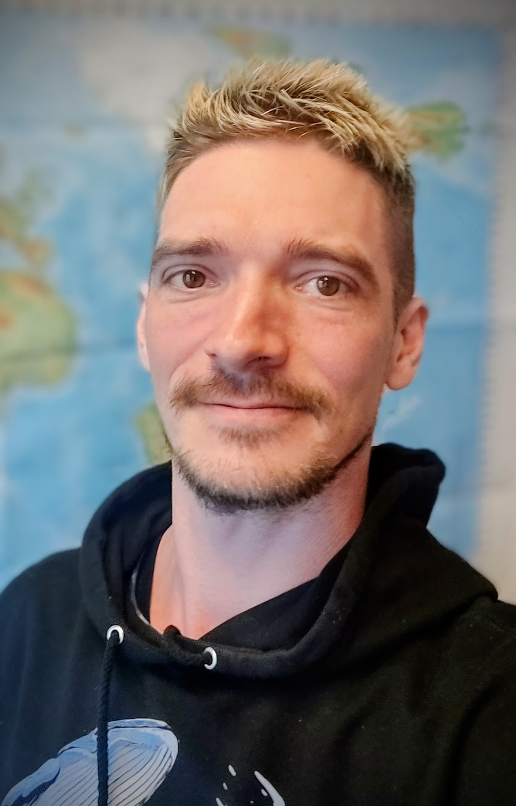

I build models that forecast renewable energy generation from machine learning based weather predictions

I'm a PhD candidate in Energy-Meteorology at the University of Cologne with expertise in machine learning, atmospheric science and data integration. Currently I'm using a U-Net based data processing pipeline to investigate how to improve and speed up solar energy forecasts with machine-learning weather prediction (MLWP) models. My work sits at the intersection of atmospheric science, data engineering, and machine learning.
Before this, I studied Computational Sciences with a Master’s Thesis in atmospheric chemistry modelling at Forschungszentrum Jülich, built a global database of extreme weather events from CMIP6 climate model data, and spent a year and a half writing scripts for a science YouTube channel. I started out as a paramedic and worked as a nurse, in an intensive care unit and geriatric care, before going to university to study physics.
Open to conversations on solar energy forecasting, renewable energy, and machine learning for atmospheric science.